For a deeper look at data than what is available in card view, you can create, save, and export
univariate and multivariate tables and graphs in Expanded View.
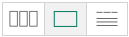
To enter this view:
-
click the icon in the view toggle at the top of the interface to expand the variable card on the far left into a univariate table,
-
double-click on a variable card in card view to expand the selected variable card as a univariate table,
-
or drag a variable from the left sidebar list onto a card in card view to create a crosstab of the two selected variables.
When you enter this view, you will see a table of the selected analysis.
Variables in an analysis
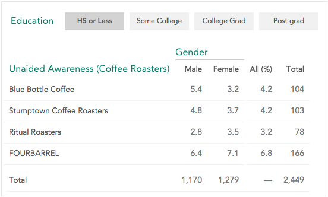
An analysis contains one or more variables. These variables have a role in the analysis - how the roles are named and viewed depends on how many variables there are and what analysis view you are looking at (see The Display Controller, below, for more information about changing the analysis view). Variables can be in the following roles:
- Row Variable – Defines the rows of a table or graph. In the case of a univariate analysis, the single variable is considered the row variable. In the example above, Unaided Awareness (Coffee Roasters) is the row variable.
- Column/Group/Slice Variable - In a table, the Column variable defines the table columns (Gender in the example above). When viewing the analysis as a graph, this variable can be used as the Group variable (when viewing the analysis as a single graph) or the Slice variable (when viewing the graph as a sliced graph of small multiples). See Grouped and Sliced Graphs, below, for an example of a sliced versus grouped graph.
- Tab Variable - Defines clickable tabs to show an analysis segmented across a third variable. In the example above Education is the tab variable, and we are currently looking at the HS or Less tab.
- Mean Variable - You can use the mean of a variable as the values (rather than percentages or counts). For example, if we were to use Age as the mean in the table above, the upper-left cell would contain the mean age of Male, Blue Bottle Coffee Aware respondents.
Adding and Replacing the Variables in the Analysis
Drag and drop a variable (from either the sidebar or the seach panel) on to an analysis to show a collection of dropzones that allow you to add or replace variables used in the current analysis.
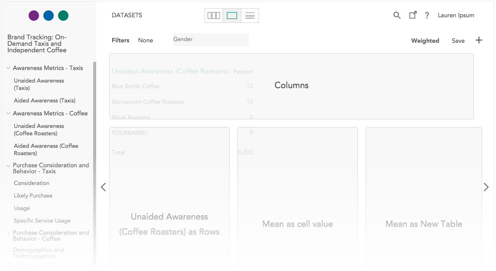
What dropzones are available varies depending on the type of variables, the number of variables, and the type of analysis.
In addition to dropzones for the analysis roles described above, there will always be a Variable as New Table/Graph dropzone. Dropping a variable here will remove all variables currently in the analysis and create a univariate analysis with the selected variable.
Categorical array variables
A categorical array – a variable made up of a group of items that share a common set of categories — defines two dimensions. When you make a new table or graph, the default view has the items as rows and the categories as a common set of columns, with percentages calculated by row. If you already have a column or group variable in an analysis, the categories of the array become the rows, with the same columns in place, and tabs appear to select an item of the array.
Components of array and multiple response variables
Categorical array and multiple response variables are made up of component that describe one column of an array or one category of a multiple response variable. If you want to use one of the component variables in an analysis click the + in the sidebar next to the variable name. This will display component variables that can be dragged to the analysis individually.
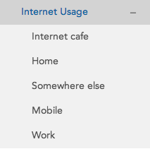
Removing a variables from an analysis
Hover over a variable in an analysis to reveal an ‘x’ next to the variable name. Click the ‘x’ to remove the variable. There are some graph types where this does not work correctly - if you are having trouble change to table view to remove the variable.
Graph types
Tables have a consistent look regardless of variable types, but Crunch supports several different sorts of graphs depending on what sort of variables are being used.
Groups and Slices
When creating graphs you will see Slice and Group dropzones rather than just the Column option used for tables. What sort of graph you get will differ depending on where you drop the variable.
A grouped graph shows the analysis in a single graph – the analysis is broken down by the group variable within the categories of the row variable.
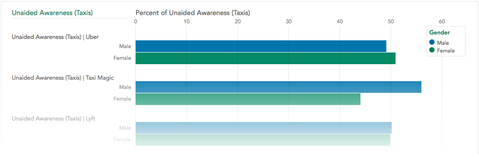
A sliced graph shows a series of small univariate graphs – one for each category in the second variable.
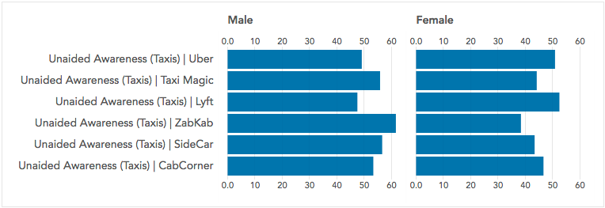
Graphs cannot contain both a group and slice variable at this time – if you add a group variable it will replace the slice variable and vice versa.
Time Plots
If a date/time variable is used as the column variable, the graph will be displayed as a time plot, showing the row variable over time.
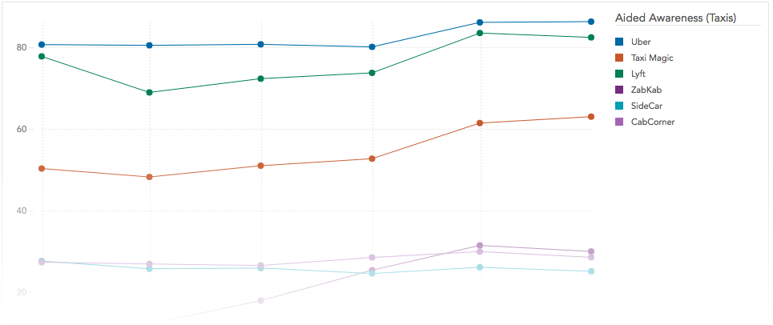
Numeric Variables
When viewed as a graph, numeric variables will display a histogram. If sliced by a second variable, a histogram will be shown for each category in the second variable.
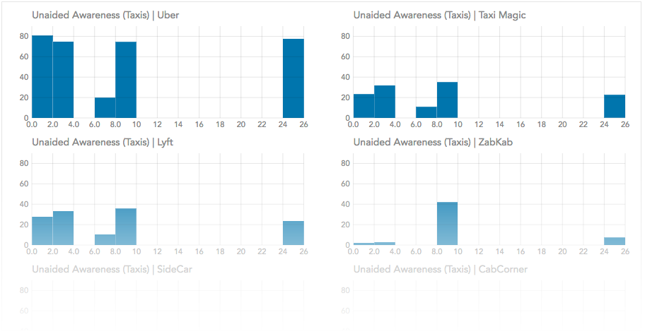
Using the Display Controller
The Display Controller at the bottom of the analyze interface is used to
change some settings.
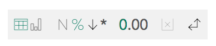
Which controls are displayed depends on the analysis being viewed. The
following controls are available:
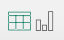
Table/Graph - Use this control to toggle between showing a table and a graph.
The graph type will vary by the types of the variables in the analysis.
—|—
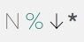
Count/Percentage, Percent Direction, and Significance testing - Use this
control to toggle between counts and percentages. If viewing percentages in a
bivariate table or graph, click the arrow control to toggle between
percentages summing by column (down), by row (right), or across the whole
table. When viewing a table, click the * to enable significance testing - this
will add shading to the graph indicating if a value is significantly above or
below the mean value for that row or column (depending on how the percentages
are being summed).

Decimal Places - If viewing an analysis that uses decimal points either for
percentages or for numeric means, use this control to determine how many
digits are shown after the decimal point.
Show Empty - If unselected any rows or columns in a table or graph that are
entirely empty will be hidden. If selected empty rows and columns will be
displayed. Note that adding filters may cause a row or column to become empty.
Pivot - Click this control to swap the row variable and the column/group/slice
variable.